Why use it?
CSS custom properties, allows developers to input custom css properties into their websites, you would use this for making your website consistent at the same time reducing the amount of code used in the css file while keeping your code clean and orderly. The css custom properties can also help with formatting a wide range of properties throughout your website.
Where to use it?
You can use CSS custom properties where ever you need. They are very useful and helpful to building websites, and maintaining consistency throughout. CSS variables can be used throughout the entire site or locally to a specific section of the website. To use a variable with the entire site declare it in the :root selector as shown in the coding below.
| Variable Root Selector | Variable Useage |
|---|---|
| 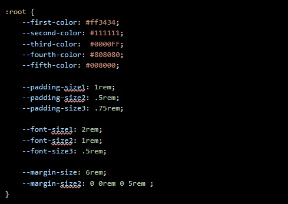 | 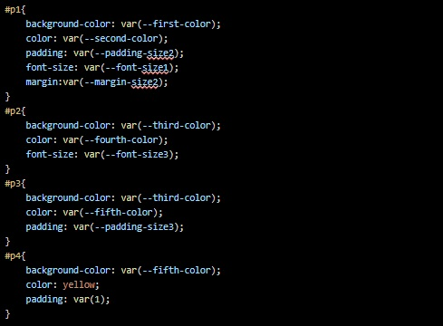 |
As you can see from the code above you can manipulate your entire site using variables.
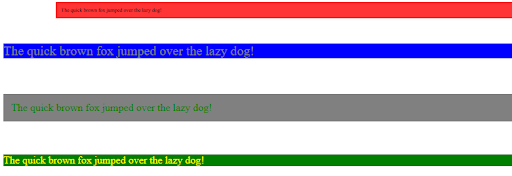To use a variable with a localized section you place the variable inside the section that is going to use it. As seen in the coding below.
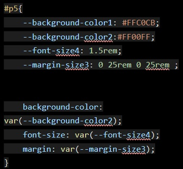 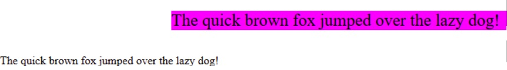Special Case Uses
Media Queries:
When writing CSS in a traditional sense, repetition can be a tedious and persistent acquaintance. When creating media queries for a responsive webpage, you may typically write something similar to the following:
| Example 1 |
|---|
| 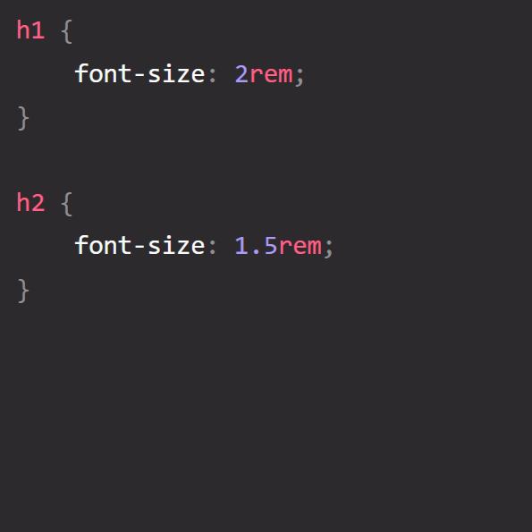 |
Now this works just fine, but it can get very time consuming, especially with larger pages with lots of content. Before you know it your code is thousands of lines long and you're struggling to find what you are looking for. Repetitive and time consuming, no fun! Instead, if we use custom CSS Variables, we can define a breakpoint once, and reuse it anywhere we want with just a couple lines of code!
Creating Our Variables:
We can define our variables to our :root and in doing so make those variables available to any element on our page. Let's start by creating our variables:
| Example 2 |
|---|
| 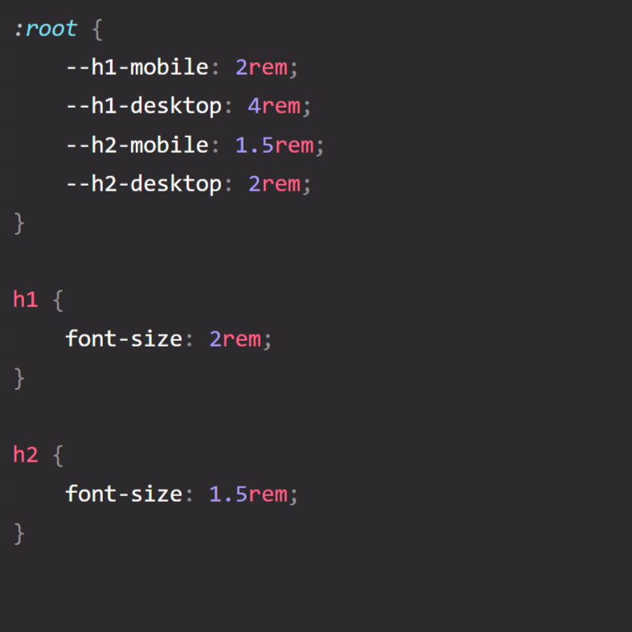 |
|
Now we can call those variables instead! |
| 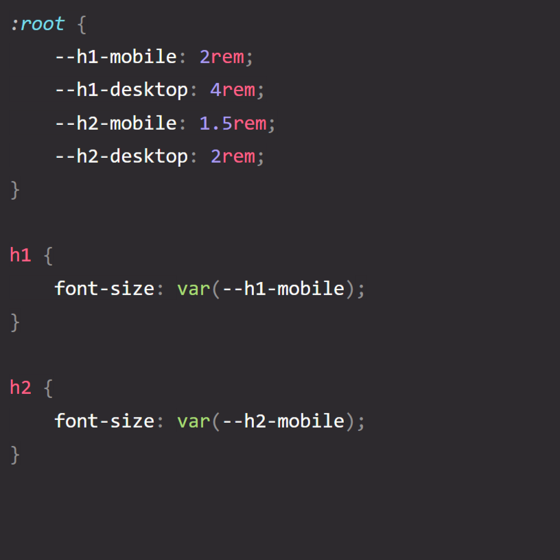 |
Using Custom Variables in Media Queries
Once we have some custom properties to work with, we can also integrate them into our media queries, this will allow easier customizability when making future changes to your page.
| Example 3 |
|---|
| 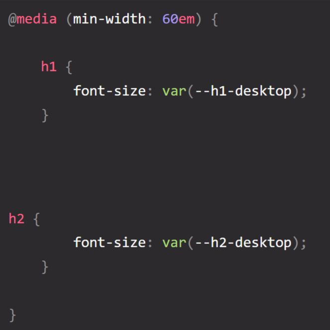 |
|
In this example we have a media query for desktop sizing at 60em, we can now repeat the same process we did earlier and call upon our custom variable for desktop sizing. |
Why is this useful?
Now you might be wondering what the point is if you still have to call the variable in the font-size property, it’s really no different than typing in the size manually. Well imagine this large webpage we were picturing earlier, and halfway through the development you realize you hate the color scheme you have, or you want the font to be slightly smaller on desktop, or you want all of your paragraph elements to be a different font. Traditionally you would have to go through every breakpoint and make those changes manually, and if you’re already 1000 lines or more deep, you’ve got a long night of copying and pasting ahead of you. This is where using CSS variables in media queries truly shines!
| Back to our roots (just a pun for fun) |
|---|
| 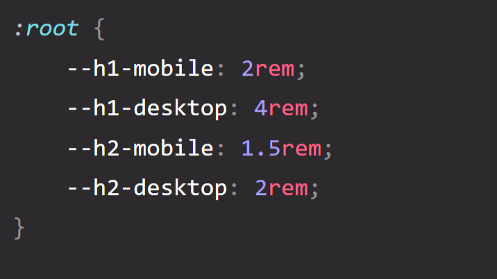 |
|
we have our established variables up top, now if we decided that we want our headings to be different halfway through development, rather than manually changing every single area that has an h2 for example, we can simply change our variable in our :root. |
| 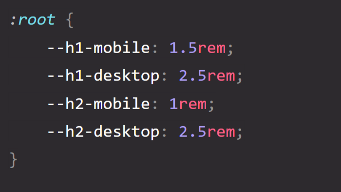 |
|
Anywhere on our page that has an h2 or h1 will automatically change to the new value we’ve just entered in our custom variables, so long as you used those custom variables when styling your page. This has the potential to greatly streamline your code when styling your page and can prevent the repetitive task of manually changing it yourself. |